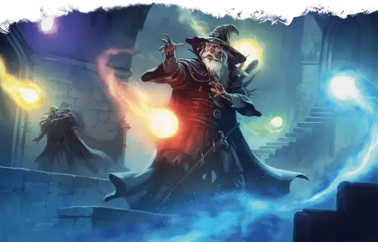

Лучезарные сферы Эльминстера
Elminster’s Effulgent Spheres
6 уровень, Воплощение

Время сотворения Действие
Дистанция На себя
Компоненты В, С, М (опал стоимостью не менее 1000 ЗМ)
Длительность 1 час
Классы Волшебник, Друид, Чародей
Шесть цветных сфер крутятся вокруг вас, пока заклинание действует.
Пока сферы крутятся вокруг вас, вы можете тратить их, чтобы создавать следующие эффекты:
Поглощение энергии. Когда вы получаете урон Звуком, Кислотой, Огнём, Холодом или Электричеством, вы можете Реакцией потратить одну сферу, получая Сопротивление этому типу урона до начала вашего следующего хода.
Взрыв энергии. Бонусным действием вы метаете одну сферу по цели в пределах 120 футов от вас: совершите дальнобойную атаку заклинанием. При попадании цель получает 3к6 урона Звуком, Кислотой, Огнём, Холодом или Электричеством (на ваш выбор). Вне зависимости от того, попала ли сфера, она тратится.
Заклинание оканчивается раньше, если у вас не остаётся сфер.
Используя ячейку заклинания большего уровня. Количество сфер увеличивается на 1 за каждый уровень ячейки выше 6-го.